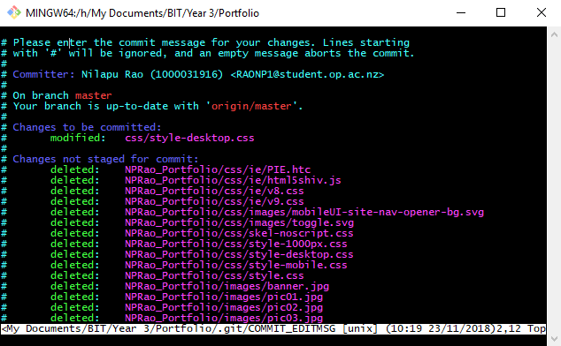
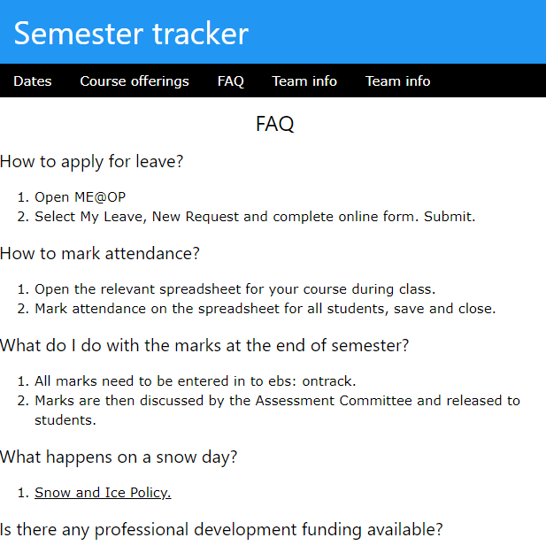
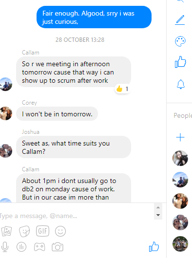
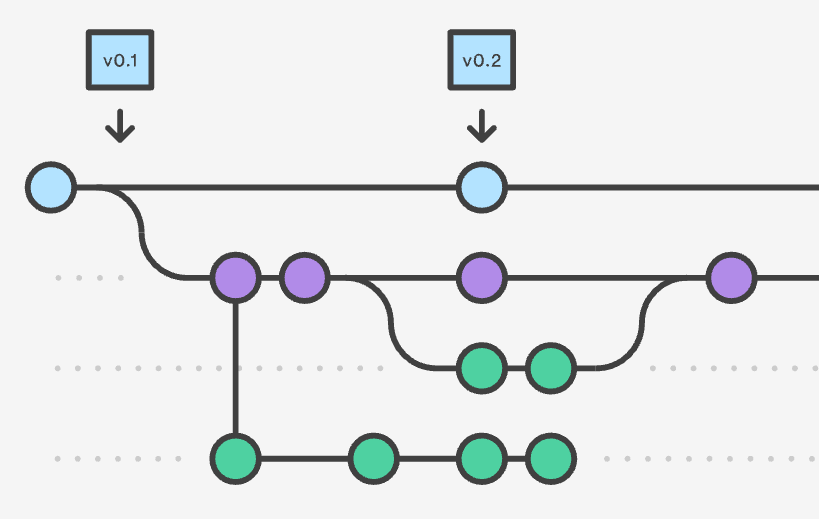

Pre-Sprint
The first thing we learnt was how to navigate through GitHub and the basic fundamentals such has learning how to use git. We were shown other possibilities that we may not have wanted but could do by mistake of doing such as forgetting to use –m in the commit command, also what to do in that situation. I think this will be useful for in case I ever get myself in a similar situation overall improving my time management as I’m less likely to make this mistake and know how to overcome this issue.
Working within a group began in the next class, I decide to go within a group that I did not know well and had only small conversations with prior the semester, the reason why I did this was because It would challenge my communications skill and overall improving them. Our team looked equally engaged towards the subject, we all seem very motivated so I am excited to see how well the five of us cooperate together.
Our two lectures Martin and Elise gave us an example of communication with the customer while Martin was pretending to be the customer, Elise was pretending to be the software engineer. They showed aspects of team work as they were cooperating well bouncing off ideas and welcoming change to the requirements which is an important part of agile. Elise showed parts of leadership by encouraging Martin to come up with an ideas by asking him questions which gave Martin the motivation to provide more. Although it I am talking about the lectures and not myself, I feel like I can learn from that and try to recreate something similar inheriting their communication perks. Afterwards they turned all the requirements into user stories, which will be very beneficial for the future therefore being good for time management.
Sprint 1
Our project has begun, now it was our turn to replicate what our lectures have shown us with customer requirements and user stories, it was to do with our project called Semester Tracker. I decided to show leadership by taking note, we showed communication and team work by deciding to have another two people in our group take notes in case one of us miss crucial details. For my milestone I was given the task of creating an FAQ page which looks like this:
The fear of being the person who lets the team down was my form of motivation, this lead to me using my communication skills when asking lectures for what they wanted in the FAQ and also managing time and completing the task on time. My first milestone was easy and successful. Overall I think our combined effort payed off improving our communication and team work skills, at the same time our communication has also been bad as we lacked communication with the client so I did not know that the FAQ was meant to be drop down, we also could have done more scrums. Our Velocity (difficulty points) came to a total of 45. For the next sprint the work load will increase, we assume for the velocity to be in-between 40 to 60.
Our two lectures Martin and Elise gave us an example of communication with the customer while Martin was pretending to be the customer, Elise was pretending to be the software engineer. They showed aspects of team work as they were cooperating well bouncing off ideas and welcoming change to the requirements which is an important part of agile. Elise showed parts of leadership by encouraging Martin to come up with an ideas by asking him questions which gave Martin the motivation to provide more. Although it I am talking about the lectures and not myself, I feel like I can learn from that and try to recreate something similar inheriting their communication perks. Afterwards they turned all the requirements into user stories, which will be very beneficial for the future therefore being good for time management.
We decided on using a messenger group as a way to communicate while not being face-to-face. We all used messenger so we agreed that it was the best option. It may not be as professional but will be used more.
Sprint 2
During this sprint my milestone was to see all dates of given day. I was very motivated in the start of the sprint that I will get the sprint done. Although I finished the sprint however, it could have been done better if I worked on my sprint earlier, the pressure from the other subjects had started to consume my time and I was not managing my time well. In reality I should have aimed to have gotten my sprint to a working software level by the class before when it’s due (two days before).
This time around, we gathered as a team a few hours earlier to work together being able to communicate face-to-face which is a more agile, we had better understanding of each other and were able to help out, it was great team work. I had working software but needed help fixing the CSS of my button layout. Our team decided to together to have more scrums (currently having one to three), working on tasks earlier and aim to have sprints finished by Tuesday to have working software to show the client, who may give us ideas and final bug fixes. The velocity was a lot bigger going from 45 to 70, we aimed to improve on the things that didn’t go well and increase the velocity to 50-80.
We decided on using a messenger group as a way to communicate while not being face-to-face. We all used messenger so we agreed that it was the best option. It may not be as professional but will be used more.
When we were being taught about, I originally did not understand as I was too embarrassed to ask for help as everyone had figured it out a while ago, this lack of communication was making me fall behind. I was now not very eager and was not as motivated in class. But thankfully I told my team who communicated in a pace that was fine, I felt stupid when I realised what I actually had to do and how simple it was. I was trying to use a terminal way then realised I could just type into a search to create a branch.
Sprint 3
Our Sprint this time was to learn a new software known as Laravel which is a PHP framework. I personally was struggling a lot with Laravel, thanks to our team work my team was able to help me get on a levelled playing field. Eventually we were able to reverse engineer the framework. However we did leave the sprint till very late not managing time trying to juggle other papers and personal matters. The tutorials online were not always useful or does not work on the version we are using, making communication between us and the framework harder. We agreed that the velocity could have been lower, now that we finally understand. There was a lot of trial and error.
Sprint 4
Our communications and team work were slightly chaotic as it was just before the holidays and everyone was busy with assignments, I was not very good with time management and struggled with my sprint. We communicated through scrums especially, and made it so we all met up a few hours before class.
Sprint 5
We have now gotten down to our final stages and now are mostly focussing on having working software as that is what matters in agile. We are assigning multiple people to specific milestones due to the importance of the milestone. I am still assigned to my milestone but so is another team member to the same one as me. Our team managed to get all the major issues and milestones out the way. We had many scrums this week and a lot of fact-to-face interactions. Our group spent a lot of time together on same tasks, giving us the chance to really focus on the big issues. Everyone in our group at this point is less motivated due to the workload and the amount of assignments and exams, because of this our website is not live. We have decided to work below the expect velocity due to assignments and exams.
Sprint 6
We have now gotten down to our final stages and now are mostly focussing on having working software as that is what matters in agile. We are assigning multiple people to specific milestones due to the importance of the milestone. I am still assigned to my milestone but so is another team member to the same one as me. Our team managed to get all the major issues and milestones out the way. We had many scrums this week and a lot of fact-to-face interactions. Our group spent a lot of time together on same tasks, giving us the chance to really focus on the big issues. Everyone in our group at this point is less motivated due to the workload and the amount of assignments and exams, because of this our website is not live. We have decided to work below the expect velocity due to assignments and exams.
Reflection
Things may have started off strong and easy, eventually the difficulty increased and it did overwhelm me. Thanks to my team, I was able to not fall off completely. I am not the sharpest in the group, nor the most confident but it was the reasonable and logical decisions that helped us function. For example: we always would have disagreements, but we would all think professionally and make the right decisions. We all aimed to be on the same level, whether that meant helping other members that needed it. There was limitation of help provided otherwise it would not be well balanced. From this experience I have gained team work and a work style communications, I’ve learnt that motivation can be such a key drive to completion. Two important skills that I wish I did more of and would like to improve upon, one is leadership, I need to take charge more as this will help build other things such as team work, the motivation of others and communication. The second skill is time management, I have always thought my biggest issue is leaving it to the last day, although that’s still an issue at times, by time management I am meaning the amount I do. When I did my work I would get tired or bored or would quickly check my phone, I would try to come up with any type of reason and just procrastinate. What I should have been doing was measure progress primarily by working software as stated in the 12 principles of agile. Agile can lead to results.